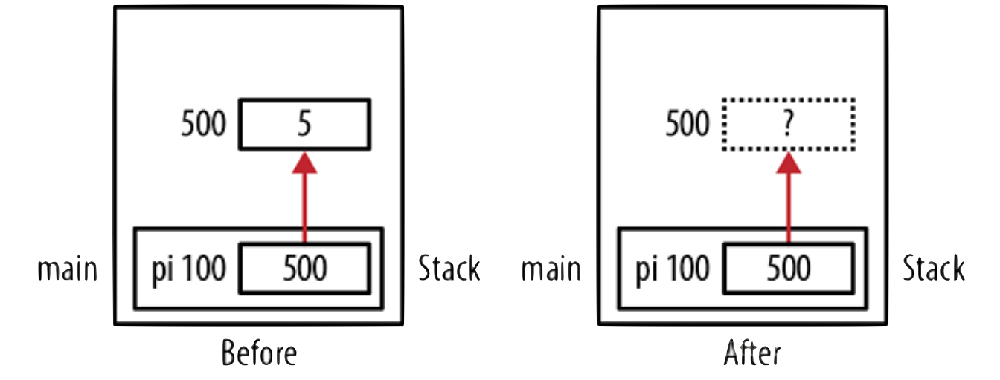
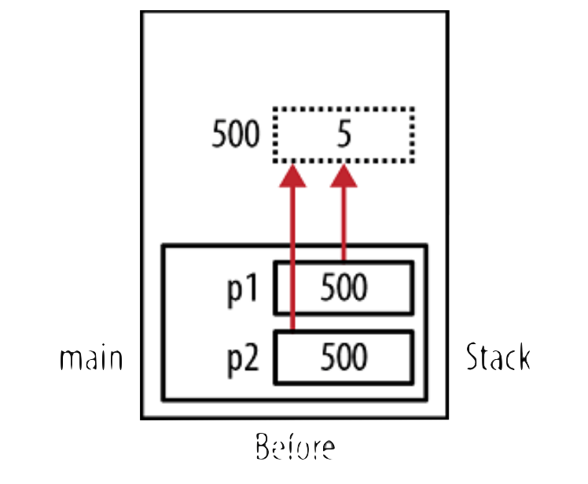
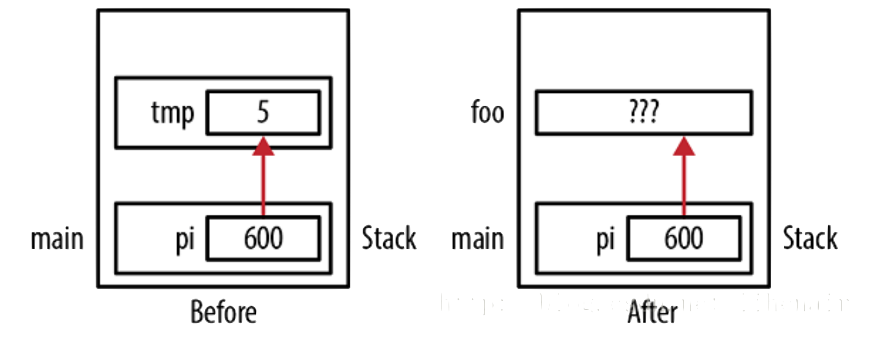

C++ 智能指针
本文将会分析C++中的一大特性 — 智能指针出现的原因以及原理，如何通过这一特性编写更加安全的C++程序。
为什么需要智能指针？
如果不使用智能指针，单单地使用普通指针，将可能会出现悬挂指针、内存泄漏等问题
Dangling Pointers
是什么？
如果指针在被释放后，仍然引用原来的内存，就叫做悬挂指针。由于指针已经被释放，对应的内存区域的值是为定义的，进行访问的话得到的值也将是未定义的，甚至可能出现段错误等异常。该指针不指向任何有效的对象。有时称为过早释放。
当出现悬挂指针的时候，可能会发生：
- 访问未定义的内存区域，将会出现未定义行为
- 可能出现安全问题
- 可能出现段错误
悬挂指针举例
使用malloc函数给一个整形变量分配内存，接着使用free函数释放内存；之后继续调用被释放的内存，那么将会出现指针悬挂问题
可能会产生该种情形的代码：
1
2
3
4
5
6
7int main() {
int* pi = (int*) malloc(sizeof(int));
*pi = 5;
delete pi;
cout << *pi << endl;
*pi = 10;
}
当多个指针指向同一块内存区域，并且对其中一个指针进行内存释放操作之后，仍然使用其它指针访问对应内存区域时，将会发生悬挂指针的情形
可能会产生该种情形的代码：
1
2
3
4
5
6
7
8
9int* pi = (int*)malloc(sizeof(int));
*pi = 5;
int* p2 = pi;
cout << "free pointer: " << pi << endl;
delete pi;
*p2 = 10;
cout << "calling memory pointer that has been freed: " << p2 << endl;output:
1
2free pointer: 0x7f9973c00690
calling memory pointer that has been freed: 0x7f9973c00690
使用块语句时可能会发生的悬挂指针情形
1
2
3
4
5
6
7
8int *pi;
...
{
int tmp = 5;
pi = &tmp;
}
// pi is now a dangling pointer
foo();在块语句中，对外部指针进行赋值，指向块语句中的某个变量的内存区域；但是在退出块语句之后，对应的内存被释放，此时其它代码认为这是一段已经被释放的内存，可能会对其进行修改，因此此时指针访问指向的内存区域，将会出现未定义行为。

Memory Leaking
是什么？
内存泄漏发生在当一块内存区域被程序员手动分配，但是没有被合适释放的时候。即使这一块内存区域不再被程序访问，但是由于没有被释放，因此没有办法再使用这块内存区域。这就称之为 — 内存泄漏。
当在程序运行过程中，出现了大量的内存泄漏，那么可能会导致程序崩溃。
内存泄漏举例
C Library Functions Called
许多C语言的库函数载返回值为malloc方法分配出的指针变量，针对这类变量需要进行free以释放内存
1
2
3
4
5
6
7
8
9
...
char *oldString = "Old String";
char newString = strdup(oldString);
if(errno == ENOMEM) ... // Fail!!!!
...
free(newString);free & delete
当程序员主动调用malloc或new操作符进行内存分配时，必须使用free或delete进行内存释放，否则将会出现内存泄漏的情形
1
2
3
4
5
6
7
char *textString = malloc(128*sizeof(char));
if(errno == ENOMEM) ... // Fail!!!!
...
free(textString); // Don't free if allocation failedre-assignment error
如果一个指向特定内存区域，在没有被释放内存的情形下直接指向其它内存区域，那么将会出现内存泄漏的情形
1
2
3
4
5char *a = malloc(128*sizeof(char));
char *b = malloc(128*sizeof(char));
b = a;
free(a);
free(b); // will not free the pointer to the original allocated memory.
智能指针的原理
智能指针，实际上是二十四种设计模式中的代理模式的一种典型应用 — 智能代理。通过将原始的C++指针进行包装，以管理其指向的对象的生存周期。
auto_ptr
最早引入的智能指针，由于同一时间只允许一个指针指向对应的内存区域，也就是存在所有权的问题，在C++11标准中被设置为deprecated，表示这一特性不应当被使用；在C++17标准中，已经被移除了，所以这里不再深入介绍。
unique_ptr
用于代替auto_ptr的智能指针，将会在下面两种情况发生的时候进行内存回收：
- 当
unique_ptr对象被销毁的时候； - 当使用操作符
=或者方法reset()将unique_ptr赋值给另外一个指针的时候。
在该对象被销毁的时候，将会调用用户提供的析构函数，具体形式为调用get_deleter()(ptr)，其中默认的调用方法是delete操作符。
一个unique_ptr对象可能不占有任何对象，在这种情况称之为空的。有两种类型的unique_ptr：
管理单独对象(通过
new创建)1
2
3
4template<
class T,
class Deleter = std::default_delete<T>
> class unique_ptr;管理动态分配的数组对象(通过
new[]创建)1
2
3
4template <
class T,
class Deleter
> class unique_ptr<T[], Deleter>;
std::unique_ptr的典型应用场景如下：
- 在处理异常的时候为保证内存安全性而使用，可以处理异常的正常退出以及出现异常的两种情况
- 将带有动态生存周期的独占对象的所有权作为参数传递给函数
- 从函数的返回值处，获得带有动态生存周期的独占对象的所有权
- 在需要移动感知类的容器，如vector中保存指向对象的指针
如果unique_ptr的类型为派生类，那么该指针是可以隐式转换为基类指针的。如果智能指针的类型为基类，是可以将派生类指针转换为基类指针接受的，在进行内存销毁时，如果基类的析构函数不是虚函数，那么将会出现未定义行为。但是共享智能指针则不存在这个要求：即使基类的析构函数不是虚函数，也可以正确完成内存回收的任务
1 |
|
output:
1 | unique ownership semantics demo |
shared_ptr
std::shared_ptr是一种可以保存对象的共享所有权的智能指针，也就是说，多个shared_ptr可能指向同一对象。在发生下列情形的时候，将会回收内存：
- 最后一个持有共享所有权的对象被销毁的时候；
- 最后一个持有共享所有权的对象通过操作符
=或reset()方法被其他对象覆盖的时候
在一个常规的共享智能指针实现中，其中将会包含两个指针：
- 存储的指针，用于保存希望被操作的指针；
- 指向控制块的指针，用于保存计数信息、内存回收方法、分配内存方法等
回收内存的方法可以是delete方法，或者自定义回收方法。
1 |
|
OUTPUT:
1 | Base::Base() |
关于运行结果的解读：
主要是关于多线程部分的解读
第一个线程在执行到输出当前的计数信息时，程序运行到了三个线程都启动运行，并且第二个线程完成了共享智能指针的赋值，所以计数为5；第二个线程在执行到输出当前的计数信息时，程序运行到了第一个线程结束的时候，所以计数为3；第三个线程在执行到输出当前的计数信息时，程序运行到了前面两个线程结束，所以计数为2。
循环引用问题
1 |
|
分析：
- 执行编号
1的语句时，构造了一个共享智能指针p，称呼它管理的资源叫做资源A（new Parent()产生的对象）吧， 语句2构造了一个共享智能指针c，管理资源B(new Child()产生的对象)，此时资源A和B的引用计数都是1，因为只有1个智能指针管理它们，执行到了语句3的时候，是一个智能指针的赋值操作，资源B的引用计数变为了2，同理，执行完语句4，资源A的引用计数也变成了2。 - 出了函数作用域时，由于析构和构造的顺序是相反的，会先析构共享智能指针
c，资源B的引用计数就变成了1；接下来继续析构共享智能指针p，资源A的引用计数也变成了1。由于资源A和B的引用计数都不为1，说明还有共享智能指针在使用着它们，所以不会调用资源的析构函数！ - 这种情况就是个死循环，如果资源
A的引用计数想变成0，则必须资源B先析构掉(从而析构掉内部管理资源A的共享智能指针)，资源B的引用计数想变为0，又得依赖资源A的析构，这样就陷入了一个死循环。
要想解决这个问题，只能引入新的智能指针weak_ptr，顾名思义，弱引用，也就是不增加引用计数，它不管理shared_ptr内部管理的指针，他只是起一个监视的作用。它监视的不是shared_ptr本身，而是shared_ptr管理的资源！！！weak_ptr没有重载操作符*和->，它不能直接操作资源，但是它可以获取所监视的shared_ptr(如果资源还没有被析构的话)。
weak_ptr
std::weak_ptr是一种不占有所有权的智能指针，如果想要通过该指针访问指向对象的内容，就必须将其转换为std::shared_ptr类型，之后再访问。
弱指针描绘的是暂时的所有权：当一个对象仅在其存在时可以被访问，并且它随时可能被回收时，弱指针可以用来跟踪对象，并且它可以被转换为共享指针以获得暂时所有权。
弱指针的另外一个作用是打破循环引用。因此弱指针不会增加引用计数。
1 |
|
OUTPUT:
1 | use_count == 1: 42 |
解决循环引用问题
1 |
|
附录
free 与 delete 的区别
结论：偏向使用delete，这是C++中使用的回收内存关键字；而free则是C语言中使用的回收内存函数。
- delete 是一个操作符，而free是一个库函数；
- delete 将会回收内存，调用析构函数；而free方法仅仅回收内存。这是由于free 为C语言的内存回收函数，而C语言中不存在类，所以不会调用类对象的析构函数；
- delete 比 free方法更快，因为操作符比函数调用更快。
- 使用malloc分配出来的内存，尽量使用free函数进行释放；使用new分配出来的内存，尽量使用delete操作符进行释放。这是因为尽管delete完全可以承担起free函数的全部任务，但是通过malloc创建的内存使用delete进行释放，程序的可读性就会变差。
什么情况下应该使用指针
在该问题下，实际上还包含着另外一个潜在的问题，也就是什么应该动态分配内存 — 堆；什么时候应该使用栈中的内存 — 栈。
虽然使用指针可以完成特定的任务，但是由于若想灵活使用，必须处理好内存释放的任务，所以一般情况下，应该努力避免指针的使用，而使用其替代方案。下面将会展示动态内存分配以及指针的使用场景。
- 动态内存分配的使用场景：需要使内配的内存可以在当前空间之外存活的时候 — 如果在这个空间中使用创建对象的方式进行调用，那么在退出当前的空间之后，将会被自动销毁，因此使用指针，可以完成创建对象不能完成的任务。当然也可以通过复制/移动对象的方式完成相同的任务，并且这种方法是被推荐的。
- 想要通过引用的方式访问对象的时候，可以使用指针：当然，在大多数情况下，引用类型的对象是可以替换这种应用场景的。
- 需要多态的应用场景：多态有两种调用方式，一种是指针，一种是传引用
- 在函数的接受参数中，可选参数的实现：使这些参数的默认值为NULL即可；如果函数在执行的过程中判断出对应的值不为NULL，那么就可以使用这些参数
- 需要与C语言库进行交互的时候：由于C语言库中的大多数函数的返回值都是指针类型，所以此时就必须处理指针的内存释放问题
std::move
高效地将某一段资源从一个对象中转移到另外一个对象中，返回类型为传入参数的右值引用类型。可以认为是，返回了一个将要被销毁的参数。
1 |
|
output:
1 | After copy, str is "Hello" |
参考资料
C++ pointers: why we need them, when we use them, how they differ from accessing to object itself
C++ Double Address Operator? (&&)
[智能指针中的代理模式](